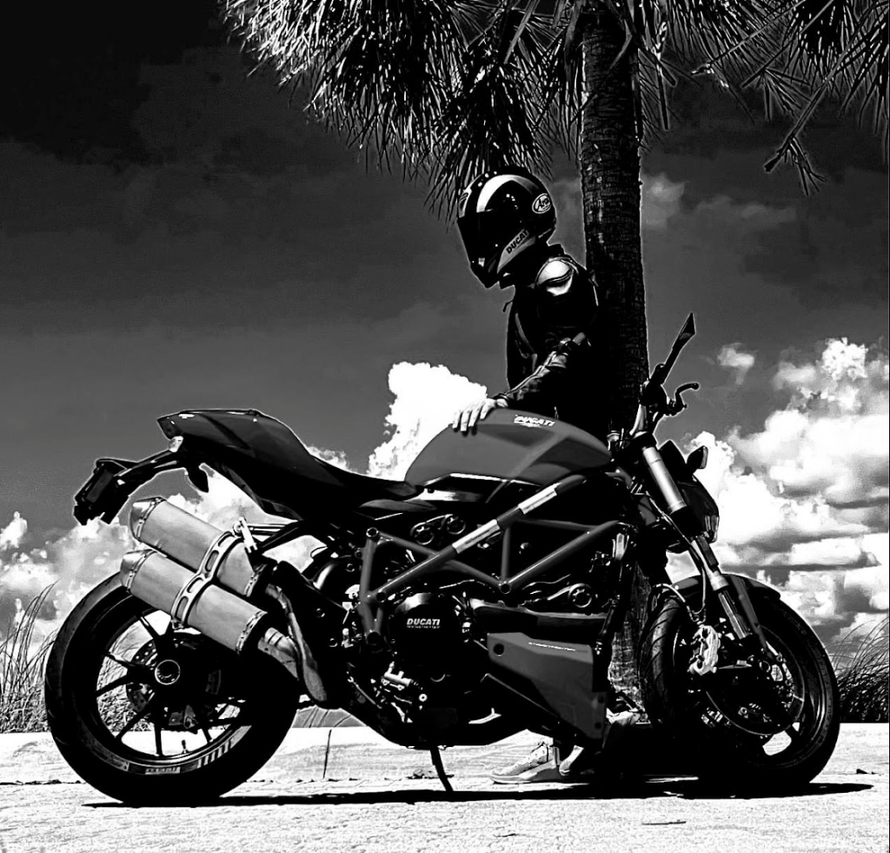

The Art & Physics of the Full-Lock U-Turn

Slow-speed motorcycle maneuvering is counter-intuitive: instinct tells riders to slow down, pull in the clutch, and look where they fear falling. Physics demands the exact opposite.
Find the bite and live inside that 3–5 mm friction zone throughout the turn. Slip it continuously.
Set slightly above idle (2,000–3,000 RPM) and freeze your wrist. Never roll off mid-turn.
Light, steady drag (5–10 kg pressure) to kill wobble and tighten the arc. Zero front brake.
Add throttle and rear brake together, keeping your eyes up.
Speed covers up poor technique; low speed exposes everything. At 60 mph, gyroscopic forces stabilize the machine on your behalf. At 3 mph, you must manufacture stability through mechanical tension—holding engine drive against the rear brake while floating in the clutch friction zone.
When you conquer the full-lock U-turn:
Reps beat theory. Dedicate 20 minutes of deliberate slow-speed circle drills twice a week. Within a month, full-lock turns in a single lane will transform from your most dreaded maneuver into second nature.